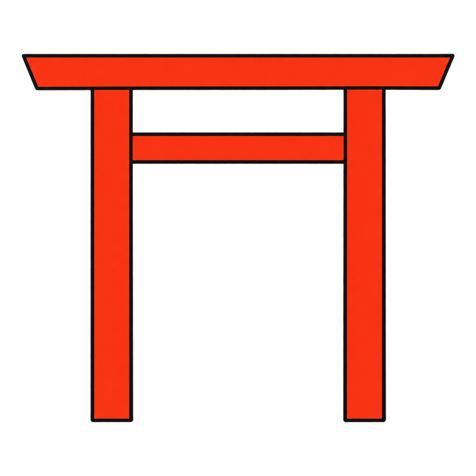
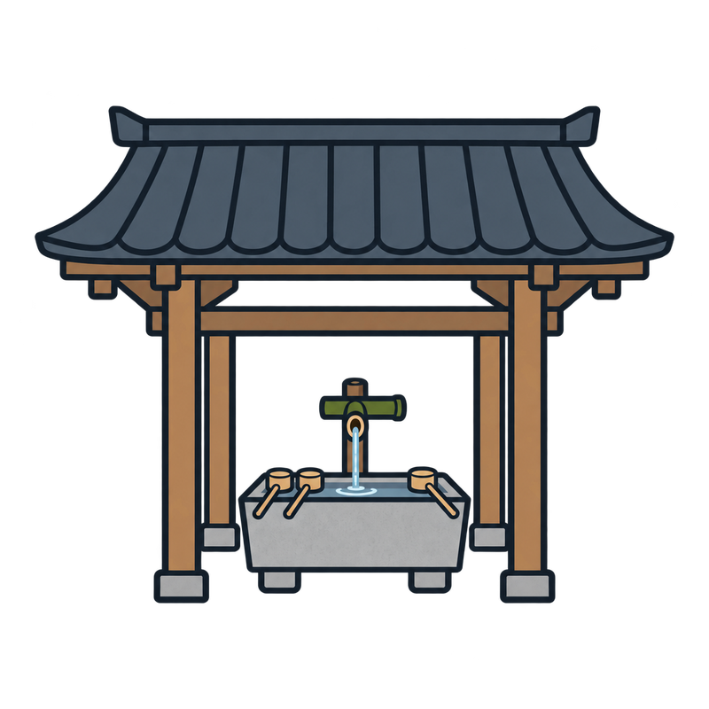
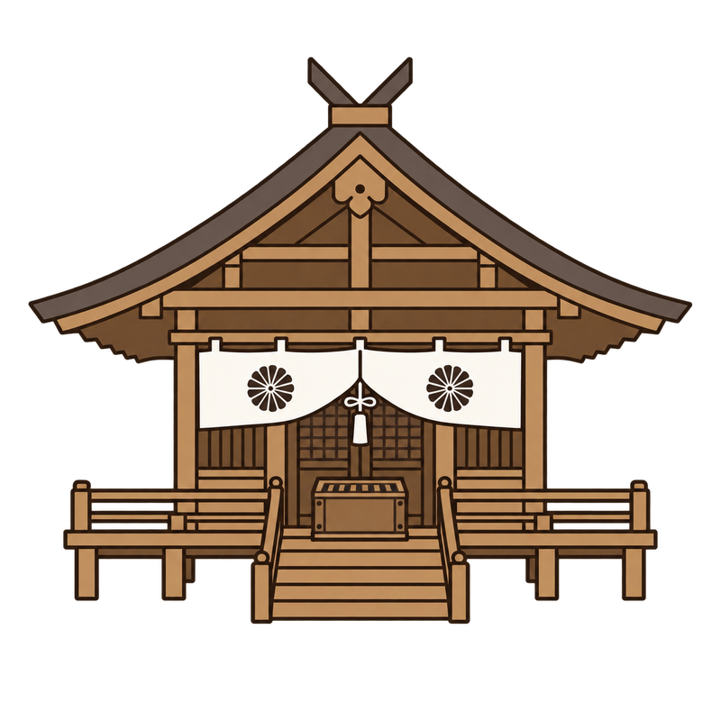
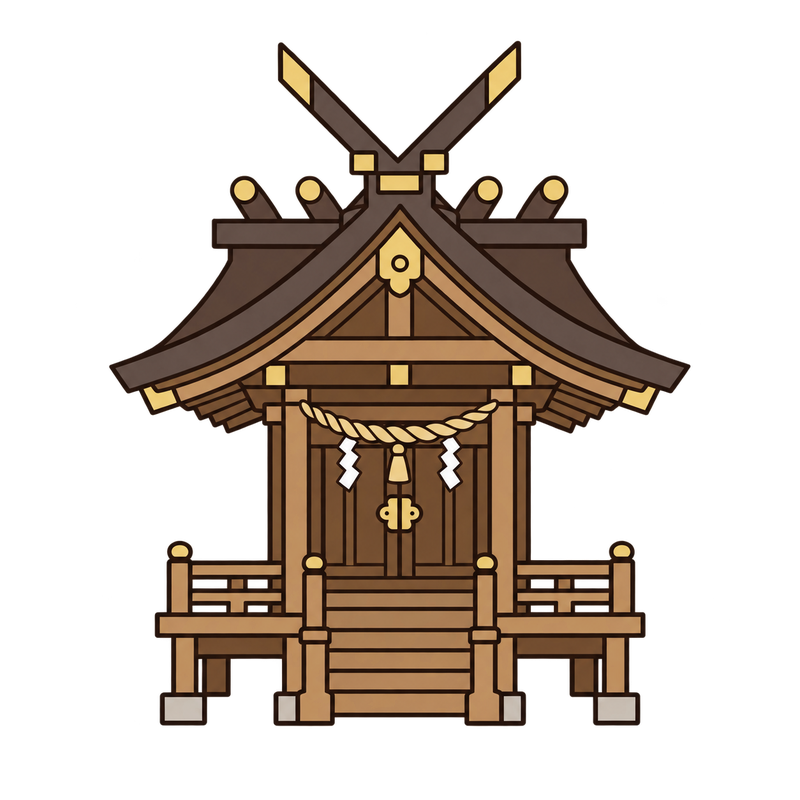

鳥居——ここから先は、人の土地ではない
- 2つの型を覚えれば大半が見分けられる。 神明（しんめい）鳥居＝柱も横木もまっすぐで、装飾がほとんどない。伊勢神宮の系統。明神（みょうじん）鳥居＝一番上の横木（笠木）が反り上がり、その下にもう1本（島木）が入る。数の上ではこちらが大半
- 朱色の理由＝魔除けとされるが、もとは水銀を含む顔料で、木材の防腐剤でもあった。実用と信仰が同じ材料から来ている。無塗装の木や石の鳥居も多い
- 千本鳥居（伏見稲荷大社）＝あれは装飾ではなく奉納。願いが叶った礼に人が1本ずつ寄進したもので、柱の裏を見ると寄進者の名前と年月が彫ってある。今も増え続けている
- 海に立つ鳥居（厳島神社）・山頂の鳥居＝島や山そのものが神なので、社殿を建てられない。鳥居だけが手前に立つ
神明鳥居と明神鳥居——見分け方


1笠木
2島木（明神のみ）
3貫
4柱
神明＝直線・装飾なし（伊勢神宮の系統）。明神＝笠木が反り、島木が入る。数の上ではこちらが大半。
色は見分けの基準ではない。朱塗りの神明鳥居も、素木の明神鳥居もある。
鳥居をくぐった先、境内で実際に何を見ればいいか。
境内——見えないものを中心に作られている
神社でいちばん大事なものは、見えない。本殿の奥に神体があり、誰も見ない。伊勢神宮の神体は天皇でさえ見ない。この前提が分かると、境内の作りの意味が変わる。
- 拝殿と本殿＝参拝者が立つのは拝殿の前まで。本殿には入れないし、中身も見えない。建物の大きさより、何重の垣で囲まれているかを見る
- 狛犬＝左右で口が開いているものと閉じているものがある（阿吽）。⚠️狛犬とは限らない。稲荷は狐、春日大社は鹿、日吉大社は猿。神使は社によって違う
- 注連縄（しめなわ）＝ここも境界の印。出雲大社の注連縄は5トンある
- 鈴＝鳴らして自分が来たことを告げる、とされる（諸説あり、後世の習慣という説も）
- 御神木＝社殿より古いことがある。建物は建て替えられるが、木は建て替えられない
- 絵馬・おみくじ＝絵馬は願いを書いて掛ける板。おみくじは凶が出ても構わない（境内に結んで置いていける）
境内の順路
一の鳥居

手水舎
拝殿
本殿（入れない）
参道は端を歩く——中央は神の道。
参拝者が立てるのは拝殿の前まで（破線）。本殿には入れないし、中身も見えない。